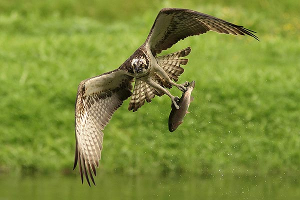

Pandion haliaetus
El águila pescadora o halieto (Pandion haliaetus) es un ave rapaz de tamaño medio, siendo una especie de ave acciptriforme perteneciente a la familia de Pandionidae. Esta águila también es conocida como gavian pescador, guincho o halieto. Estas aves aparecen en todos los continentes, excepto en la Antártida, aunque en America del Sur es solo migradoras no nidificantes. Algunas clasificaciones lo colocan como el único miembro del género Pandion, minetras que otras consideran una segunda especie dentro de este genero, Pandion cristalus.

El águila pescadora se diferencia en varios aspectos de otras rapaces diurnas.
Los dedos de las patas son de igual longitud, sus tarsos son reticulados y sus
garras redondeadas. El águila pescadora y los búhos son las únicas aves rapaces
cuyo dedo exterior es reversible, lo que les permite agarrar a sus presas con
dos dedos por delante y dos por detrás. Esto es particularmente útil cuando
atrapa peces resbaladizos.
El águila pescadora mide entre 52 y 60 cm de alto, con una envergadura que
oscila entre 152 y 167 cm. De partes superiores castaño oscuro, e inferiores
blancas, jaspeadas de oscuro, con una máscara oscura a los lados de la cabeza.
De cola larga y estrecha, y alas angulosas, es fácil de identificar.
Posee unas plumas alargadas en la nuca que forman una cresta que se eriza con frecuencia.
Los ejemplares juveniles se identifican por las manchas marrón claro de su
plumaje y, en general, por un tono más pálido. Los machos adultos se distinguen
de las hembras por el cuerpo más delgado y las alas más estrechas. Son fáciles de
distinguir al ver una pareja, pero no tanto con individuos solitarios.
Es un ave particularmente bien adaptada a su dieta de pescado. Posee unas fuertes patas,
provistas de escamas que le facilitan la sujeción de la presa, y uñas largas y curvadas.
Puede cerrar las fosas nasales para evitar la entrada de agua durante las inmersiones.
Localiza a sus presas desde el aire, a menudo cerniéndose antes de zambullirse con las patas
por delante para capturar el pez. Cuando vuelve al aire, coloca la cabeza del pez de frente,
para disminuir el rozamiento del aire. Las escamas de las patas y las uñas son tan efectivas,
que en algunas ocasiones el águila no puede soltar un pez demasiado pesado. Esto puede ocasionar
que el ave caiga al agua, donde o bien nada hasta la orilla, o fallece por hipotermia o ahogamiento.